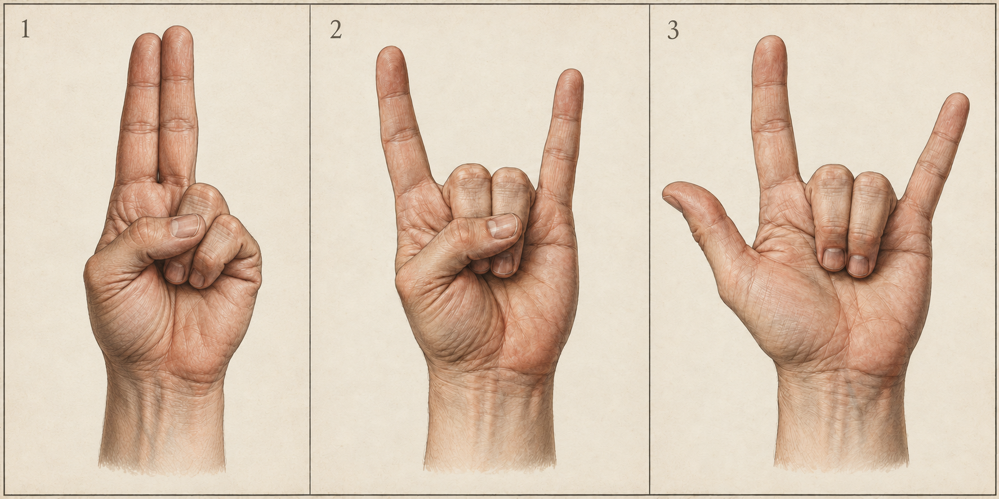
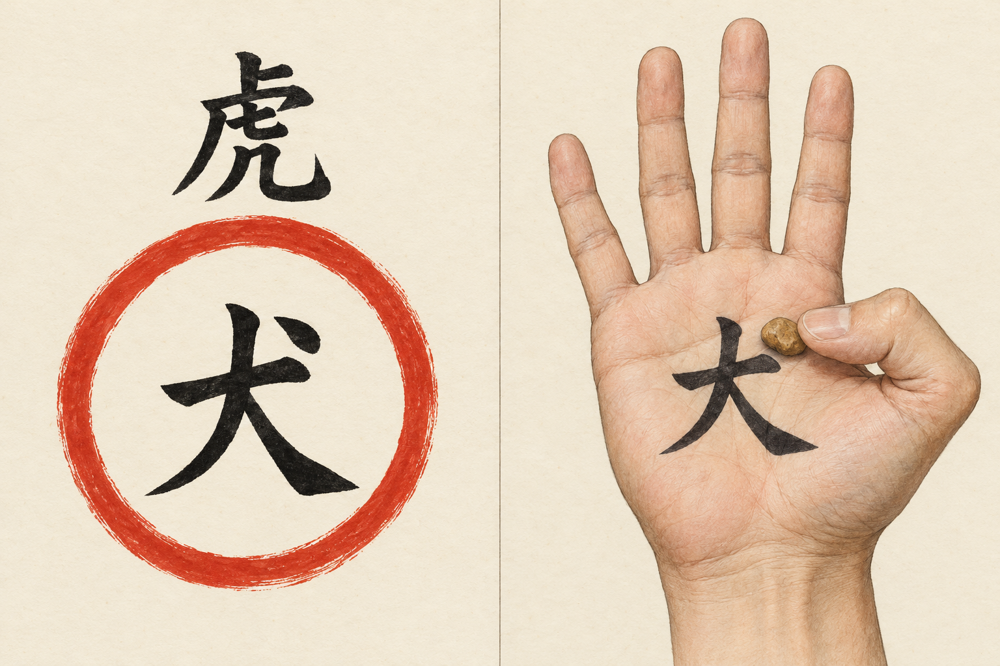
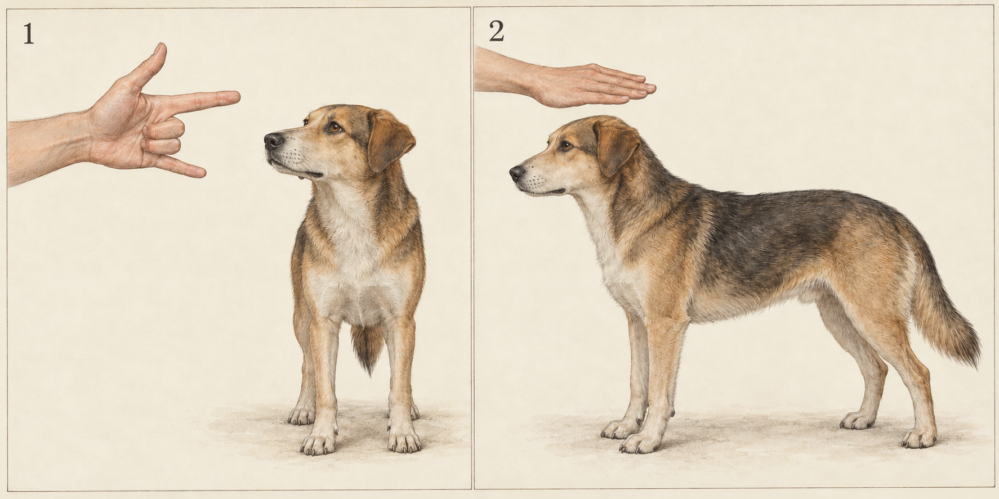
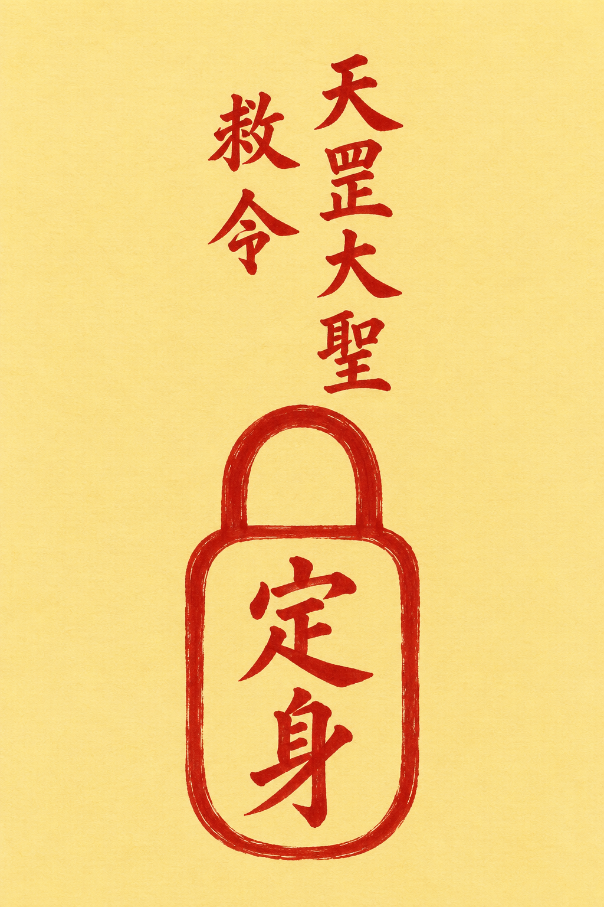

「把狗定住」在民间不是单一法术，而是四套独立传承：唐代医家咒禁、正一符箓派定身法、乡土草医定狗符、江湖迷狗咒。本报告将其符、咒、诀全部复原，并用动物行为学文献与对照实验检验其效力。
湖南石门县政府文化档案收录：定狗口诀、定狗符（圈内「犬」、圈外「虎」）、无符黄土块手法——检索范围内最切题的一手民俗记录。
动物行为学称强直不动（tonic immobility）。犬类实验（Reese 1981；Massey 大学 1993）证明：物理保定后狗确实进入不动状态——但触发它的是保定，不是咒语。
定蛇消符对照实验：不画符，蛇同样不动；偷狗案件警方归因为气味熟悉与口哨，从未提及咒语。符咒的真实功能是为保定动作争取时间、提供心理结构。
性质声明：本报告为民俗学资料整理，所录符咒均属民间信仰范畴，不具实证效力。科学解释见第伍节；现实犬患处置见第陆节。
定身类法术有清晰的制度史与文献链：它曾在国家医疗体系中占有一席之地，后下渗为民间遗存。
《周礼》载疡医「掌……之祝药劀杀之齐」；马王堆《五十二病方》含禁咒方 38 种。
唐设咒禁博士、咒禁师、咒禁工、咒禁生共 21 人，与医、针、按摩并列。《唐六典》：「有道禁，出于山居方术之士；有禁咒，出于释氏。」
两卷二十二篇、二万四千余字，为后世咒禁教本。其中卷三十《禁狗鼠第十九》是现存最早的「禁狗」专题文献。
茅山、阁皂山、龙虎山并称「三山符箓」；定身、千斤榨等「制人之法」在秘传抄本中定型，明言「可定任何活着的动物」。
供奉二郎真君的「西天佛法」等法教各派将定身法转为制歹、防身之用。
石门县草医以咒符定恶狗（防）；湘西迷狗咒在偷狗贼与乞丐中秘传（盗）。
以下为依据本报告文字制作的 AI 辅助研究插图，不是历史原件摹本。写实图用于辨认手形，后文指位图用于逐指核对；传承底本尚缺的项目仍以校核表为准。


| 项目 | 唐《禁经》禁狗咒组 | 正一茅山定身法 | 乡土草医定狗符·土块法 | 江湖迷狗咒 |
|---|---|---|---|---|
| 时代 · 来源 | 唐·孙思邈《千金翼方》卷三十《禁经下·禁狗鼠第十九》，太医署咒禁科教本 | 明清秘传抄本《茅山法术秘传》《正一教》系统，各本文字高度一致 | 近现代·湖南石门县政府文化档案《灵符巫术》 | 近现代·湘西巫术民俗调查（新湖南·湖南日报） |
| 使用者 | 咒禁博士、咒禁师、咒禁生（国家医疗编制） | 道士、法教弟子 | 草医、匠人 | 偷狗贼、讨米乞丐 |
| 针对目标 | 令狗不咬人、治狗毒、入门不吠 | 「定任何活着的动物」及人，防身制歹 | 定住恶狗猛犬，防其伤人 | 令狗不吠并乖乖跟人走 |
| 符式 | 以咒禁为主；配「西厢屋檐下土／灶中黄土和苦酒作泥丸」外摩 | 定身符（原书注「见符图：8」，网络传本未附图）；民间简化为「一圈一点」 | 圆圈内书「犬」字，圆圈外书「虎」字（虎镇犬）；或无符用左手心土块法 | 无符，纯手法加咒语 |
| 核心咒语（摘） | 「日出东方何堂堂？狗不名狗名大黄……若啮人伤，白虎吞入汝肠。急急如律令。」 | 「天灵灵、地灵灵，定身祖师来降临……二脚入地不动摇，吾奉太上老君急急如律令。」 | 「赫赫扬扬，日出东方……前捆狗头，后捆狗脚，锁到狗子，不准动脚。」 | 「抬头望青天，师傅在身边……我身化为狗走，狗走化为羊，前开三光……」 |
| 手法 · 手诀 | 以气嘘呵；捻狗目；向王闭气、七息七禁；入人家先脚踏门右 | 右手捏剑指，向目标一指 | 左手心书「犬」字，土块压在「犬」字的一点上，大拇指压住土块，四指合拢成拳 | 拇指、食指、小指三指呈叉状指狗头；再张掌从狗头抹到狗尾 |
| 施用步骤 | 命名（改称「大黄」）→ 申职（只啮猴鼠）→ 示威（白虎吞肠）→ 嘘呵捻目 | ① 念定身咒 → ② 画定身符于目标身体 → ③ 剑指一指 → ④ 大喝「定」 | 「观相」后画符念诀；或无符时寻黄土块 → 左手心书「犬」→ 土块压字 → 握拳念诀 | 叉指狗头 → 张掌抹向狗尾 → 同时念咒 |
| 解除 / 反制 | 无专门解法（功能型禁咒，事毕即止） | 解退咒「千法解，万法解……铁牛祖师来解退，铜牛祖师来解退」，画解退符念咒即解 | 记录未载解法 | 无咒解，主人一声叫唤即可唤醒 |
| 修炼前提 | 医官教学体系；受禁须持斋戒、知禹步与掌诀 | 连续修炼四十九天（野外坟地）；无此条件则静室练一百二十天，不得间断 | 无修炼期，随身可施 | 师承口传，无固定修炼期 |
| 现代检验 | 祖式地位后世定兽咒「命名—申职—威慑」结构源此 | 现象可复现咒符非必要消符对照：不画符目标同样不动 | 田野孤证检索范围内唯一完整定狗记录，无对照验证 | 非必要因素案件记录显示气味＋口哨即可复现 |
四系共用同一技术内核：物理控制先行，仪式叙事加持。共同祖式可追至《禁经》「命名—申职—威慑」结构；至民间层则删繁为「封闭意象（圈／锁／拳）＋短咒＋一声断喝」。
来源：石门县人民政府文化档案《灵符巫术》，载当地草医、匠人「若见恶狗伤人，就用咒符定狗」。操作分符法与无符法两条路径。
同源记录另有治狗咬伤「土」字诀（「天上金鸡叫，地下子鸡啼……金木水火土，生肌皮和口」，黄土外敷），及当地草医「杀狗巫术」的存在性记载（诀文未采录）。其五行解释为「狗属亥，为土所克」——系民间归类（传统地支中狗实属戌），照录存疑。
来源：《茅山法术秘传》《正一教》等秘传抄本系统（各本文字高度一致）。流传最广的通用定身法，狗自然在列。
修炼门槛：抄本要求连续修习四十九天且「要在野外坟地中修练」；无此条件则家中静室练一百二十天，不得间断。加重版「千斤榨」（灵官咒）：「灵官使起泰山榨，泰山重的千斤榨……千人抬不起，万人拉不起」，抄本明确警告「可制人于死地，用时一定要慎重」；其解法为「九牛咒」。
与茅山系不同：先供奉、后修炼，用时只需掐诀念咒，无临场画符动作。
来源：湘西巫术民俗调查（新湖南·湖南日报）。与「定住」相反，目标是让狗服帖跟随；使用群体为旧时偷狗贼与讨米乞丐。

「现在乡下偷狗贼可厉害了，根本不用咒语，用毒药毒，用带剧毒的弩箭射……在这些强盗面前，咒语也失效了。」——记录者本人即指出：同一目的，现实手段早已取代咒语。
《千金翼方》卷三十所载，现存最早的成体系禁狗文献，为上述民间技法的远祖：
民间有谚：「画符不知窍，反惹鬼神笑；画符若知窍，惊得鬼神口叫。」所谓「窍」，即符令的结构与仪轨。
三勾代表三清（或三界公），一笔一咒：「一笔天下动；二笔祖师剑；三笔凶神恶煞去千里外。」无三勾则念：「天圆地方，律令九章，吾今下笔，万鬼伏藏。」
笔墨纸砚朱砂须先以神咒敕过。例如——
设坛行祭礼；术者净心、净身、净面、净手、漱口，上香跪拜祝告，正襟危坐，存思运气，一气呵成，中间不可停顿；边画边轻声念咒并吹气于符中；左手掐日君诀（或月君诀、天纲诀）以「取日月真气入符」。

正规定身符（锁形＋救令＋取炁呵笔）与民间简符（一圈一点）之间，只保留了「封闭」与「一点胆」两个核心意象——这正是民间层对道教层的功能化删减。
将「定狗术」的声称拆为可检验的四项逐条对证。总体结论：「把狗定得不动」是可复现的真实现象，但其机制是物理保定诱发的动物防御僵直，与符咒口诀无因果关系。
动物行为学称之为强直不动（tonic immobility，TI），又称动物催眠、假死、吓直：由保定（restraint）诱发的相对不动状态，被视为「终极防御反应」——当战或逃均已失败，动物以静止迷惑捕食者（多数捕食者拒食死物）。
其一，抓住鸡翅下两根筋拨弄两下，鸡即不动（眼睛仍会动）；其二，强行按在地上，在嘴前画线，数秒后放开——「拍个巴掌」鸡即恢复。1636 年欧洲人即记录了同一现象，当时误以为「鸡的催眠术」。
| 案例 | 现象 | 警方/记录者归因 |
|---|---|---|
| 徐州铜山案 | 4 人团伙一夜盗 6 条弓背犬，狗未吠未叫，「像遇到老朋友」乖乖上车 | 白天多次上门逗狗，让狗熟悉其气味；夜间以口哨引出 |
| 杭州双浦案 | 郑某某靠近任何狗（含金毛、德牧）都能直接牵走，不咬不叫 | 民警：「他是专门抓狗的，身上可能跟狗有一种气味可以让狗不叫」，未提及任何咒语 |
| 吉林大安案 | 「全村最厉害的狗」被陌生人直接牵走 | 嫌疑人有盗狗前科，熟悉犬性；网友猜测「气场/虎骨」属民间附会 |
狗的跟随可由气味脱敏＋口哨条件反射＋犬行为知识完整解释，无需引入超自然因素。
| 民间声称 | 判定 | 证据依据 |
|---|---|---|
| 狗（及鸡蛇等动物）能被「定」得不动 | 现象存在 | 犬类 TI 文献（Reese 1981；Ong 1993）；定鸡/定蛇重复实验；防御级联理论 |
| 「不动」由符咒、口诀、掐诀所致 | 不支持 | 定蛇消符对照：不画符同样定住；TI 诱发的必要条件是物理保定而非语言 |
| 画符念咒可令狗乖乖跟人走 | 非必要因素 | 三起盗狗案件均归因气味熟悉、口哨或熟悉犬性，均未提及咒语；无控制条件下的咒语有效记录 |
| 特定犬只更易被「定住」 | 部分成立 | Ong 1993：胆小、应激排泄犬更易出现 TI——但这是气质/恐惧水平因素，与任何神秘归因无关 |
| 念咒致狗当晚病/死（石门案例） | 无可核查证据 | 属单一当事人口述叙事，无第三方记录；符合巫术叙事「事后附会」结构 |
| 「催眠」动物是安抚手段 | 存在争议 | Vet Help Direct（2024）证据综述：兔与犬的 TI 伴随恐惧应激生理指标，属病理恐惧反应而非放松，不鼓励对宠物施加 |
将狗侧卧按住约 30 秒后松开——少数胆小个体会出现短暂强直不动（期间心率正常或下降，巨响、捏趾等强刺激亦不终止该状态）。这就是「定身术」在完全去除符咒后的内核。反过来说：缺少物理控制这一前提，符咒本身不产生「定住」效果——这正是现有消符对照实验与案件记录一致指向的结论。
把定狗术放回村落、行旅、入户与师承语境，才能理解符、咒、诀为何成套出现。本节保留各类材料的差异：文献记载、地方讲述、研究解释分别注明，不把异文拼成一套所谓标准法。
| 诉求 | 材料中的表现 | 民俗研究切入点 |
|---|---|---|
| 止吠 | 《禁经》有“禁狗不吠人法” | 声音如何成为住宅边界与陌生人警报 |
| 防咬 | 另列“禁狗令不咬人法” | 行旅者对身体安全的祈求 |
| 入户 | 向人家时先踏门右，并告门丞户尉等神 | 人间主人与门户神共同构成入门秩序 |
| 治伤 | 禁狗毒、泥土敷伤与咒语同篇出现 | 医药与咒禁在文本中的并置，不能等同于定身 |
| 引随 | 湘西报道所述“迷狗” | 犬从看门者转为跟随者；与止吠是不同叙事 |
据识典古籍《千金翼方·禁狗鼠第十九》校录整理。电子校录可用于定位，精校仍需版本影印与页码。本表是功能分类，不是原书新增的篇目。
《禁经》开篇先改称犬的名字，再申说它应履行的职责，继而引入白虎威慑。可将其读作一场向动物发布命令的仪式话语：先确定对象，再说明秩序，最后宣布违令后果。这是对文本结构的分析，不能单凭结构相似就认定后世各法直接出自此篇。
同篇入户咒面向门丞户尉、篱落诸神，值得与直接命犬不动的咒分开阅读。前者先处理人与屋宅的关系；后者把注意力集中到犬身。章节虽并列收录，受话对象和使用场景并不相同。
新湖南 2017 年报道将迷狗叙事联系到偷狗者，也提到乞讨者畏犬、需要靠近人家求食的生活背景。这提供了职业与行路生活的观察线索；其中关于丐帮传承的推想仍是报道的推想，不能升级为已证实的组织史。
咒中“师傅”与施术者自身并置，可从传法权威、护身和身份转化三个角度阅读。相关解释属于本报告的分析；报道记下的讲述既不是现场效果实验，也不足以代表整个湘西的统一传统。
《巴岱手诀：人神沟通的掌上秘语》把手诀置于符箓、咒语共同参与的仪式环境中。比较时应记录师承、仪式名称和具体指位，而不能因为手形相似便同名。巴岱材料在此作为区域比较，不作为本报告“二郎诀”图的直接依据。
湘西“迷狗”报道明确列出第一步伸拇指、食指、小指，第二步五指张掌。原报告迷狗图的伸屈配置与该报道相符。报道未说明左右手、掌心朝向和关节角度，因此本图只表达指位与动作顺序，不补写这些细节。
| 对象 | 本次核对结果 | 图文处理原则 |
|---|---|---|
| 迷狗诀图 | 三指配置、五指展开与报道相符 | 保留指位示意，不能充作原传手印照片 |
| 定狗符 | 原稿称圈内犬、圈外虎；本次未取得地方原始页面或影印 | 保留为据原稿描述的复原；虎字具体方位待核 |
| 黄土块诀 | 原稿载左掌、犬字点位、拇指压块；原始记录待补 | 现图是分层示意，不是握拳后的真实可见视图 |
| 剑指 | 原稿提供伸屈解释，未提供该抄本手诀原图 | 只能称通用指位示意，不能认定所有师承细节相同 |
| 一圈一点 | 原稿已说明原抄本“符图8”缺失 | 不得以此图替代缺失原图，笔顺与符胆解释待核 |
| 二郎诀 | 原稿的指位与其文字说明相符，传承底本未取得 | 图文内部一致不等于传承已获核实 |
| 锁形定身符 | 未取得可逐笔对照的原图 | 保留示意，不能据此确认笔画、字序或符式完整性 |
| 定身咒异文 | 原稿把南头六星／南斗六郎校作南斗六星 | 校改属编者判断，不再以“原文”掩盖；异文并存记录 |
吕养正《湘西“锁蛇”：蕴涵科技元素的黑白巫术晶品》，载《吉首大学学报》2008 年第 29 卷第 5 期，147—149 页。作者将锁蛇放入辰州符及防御、攻击两类巫术的关系中讨论。可比较的研究问题是：同一术法如何因用途不同而改变道德评价；本文不据此推定定狗与锁蛇存在同一师承。
湛江市图书馆雷州石狗文化资源呈现了另一种犬与地方社会的关系：犬形雕刻进入祠庙与地方文化景观。它可与“需要制服的犬”形成研究对照，提示犬在民俗中不止一种角色；石狗不因此归入定狗术，也不自动证明二者同源。
一份可复核的图咒诀记录应同时保留：采录地点与日期、讲述者身份及师承自述、抄本封面与页码、原图全幅与局部、咒文原貌与断句、左右手和掌背朝向、动作前后关系、适用场景与禁忌。口传材料应另记方言音读，不能凭普通话近音擅改生僻字。
同一符式若有不同版本，宜并列展示来源与差异；缺笔不自行补齐，难字可标“字未识”，残句可标“原录缺文”。这能增加材料的丰富度，同时避免把不同师承拼接成一套从未存在过的仪轨。